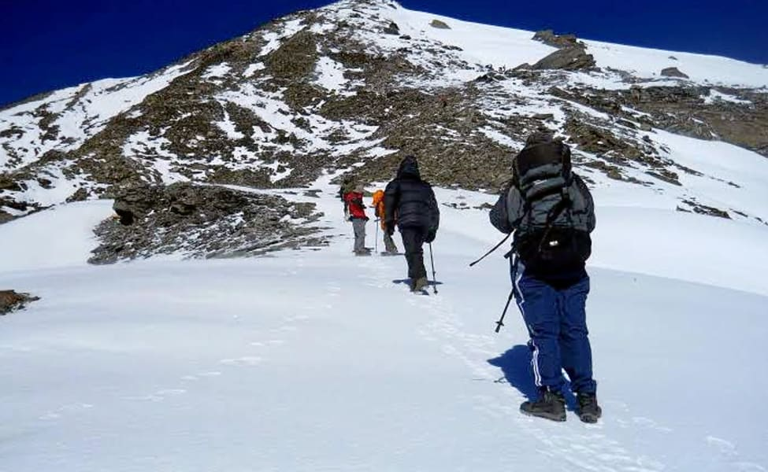

CHAUKHAMBA PEAKS accompanied with three mountains settled in the Gangotri Group of Garhwal region. Set at an elevation of 7138 m 7070 m, 6995 m and 6854 m respectively, these peaks rest at the fore of the Gangotri glacier and structures the eastern part of the group.With such attractive location and prominence, the whole of the massive has been quite popular among the explorers for trekking and peak climbing kind of adventure activities in Uttarakhand. Though, there had been few unsuccessful attempts in the year 1938 and 1939. But the peak was finally conquered by swiss Lucien George and Victor Russenberger on 13th June 1952. The route they chose was of the North-east face from the Bhagirathi-Kharak Glacier. Apart from this, there are three other possible climbing routes as well like the west face route, south-west face route and the north-west ridge. But that’s not all. There had been many failed attempts even after that while trying different routes. Taking that in consideration, Chaukhamba peaks is said to be an extensively difficult climb in the Uttarakhand Himalayas. The trek to Chaukhamba peak starts from Badrinath; the holy town in the Chamoli district of Uttarakhand. Being a popular Hindu pilgrimage site, the place has got good accessibility through road. But it doesn’t have any railhead or airport of its own. One has to travel via Haridwar, Rishikesh or Dehradun if looking for that.
HAR KI DUN is considered one of the most fascinating valleys in the Garhwal Himalayan that is completely bounded by alpine vegetation and is rich in Flora and Fauna, which is quite hard to experience in any other trekking.Uttarakhand’s hidden beauty, Trek is silently waiting for you to blow your mind with its enchanting views, snow-capped valleys, beautiful meadows, dense woods as well as stunning green patches. If you are a mountain lover then this trek is surely a delight for you.The trek offers a panoramic view of Himalayan peaks that are just amazing. While trekking, you will come across beautiful lush green meadows & pastures, serene lakes, a rich variety of flora & fauna as well as gushing waterfalls. Not only this, but you can also get outstanding sights of Ruinsara Peak from the valley.
The valley is also called the Valley of Gods because several beliefs, legends, and myths are connected. People of valley worship Yudhistara and even a local temple is devoted to him. During your trek, you will also know about several other old-era stories & myths linked to this valley.
If you are planning your trek during the spring season then it is the best time. Get ready to experience some eye-catchy sights of the flower-blooming meadows as well as valleys coupled with sprinkled snow, making your trip more exciting. If you are a birdwatcher then this trek valley is definitely a heaven for you.
The valley is also called the Valley of Gods because several beliefs, legends, and myths are connected. People of valley worship Yudhistara and even a local temple is devoted to him. During your trek, you will also know about several other old-era stories & myths linked to this valley.
If you are planning your trek during the spring season then it is the best time. Get ready to experience some eye-catchy sights of the flower-blooming meadows as well as valleys coupled with sprinkled snow, making your trip more exciting. If you are a birdwatcher then this trek valley is definitely a heaven for you.


DEORIATAL-CHOPTA-CHANDRASHILA is one of the peak which most adventures and full of stunning treks in Garhwal region, this peak is beautifully presents the granduer of the Himalayas.Having said all that, the biggest thrill of the trek has to be the climb from Chopta to the Chandrashila summit. In winter, with snow all around, climbing to the summit is an adventure that people do not forget in a lifetime. We have noticed trekkers breaking down in tears at the summit, such as the feeling of elation and a sense of accomplishment.
You will see from your left are the Gangotri range of peaks, Mt Thalaysagar, the Kedarnath and the Kedar dome. Mandani Parbat and Janhukut. The imposing Chaukhamba is right in front. Most of them are over 7,000 meters tall. Besides Deoriatal, camping on snow at the campsite of Baniya Kund is a delight. The dense forests leading to the campsite are something that we don’t get on other treks. And everything changes with the canopy of white everywhere.
You will see from your left are the Gangotri range of peaks, Mt Thalaysagar, the Kedarnath and the Kedar dome. Mandani Parbat and Janhukut. The imposing Chaukhamba is right in front. Most of them are over 7,000 meters tall. Besides Deoriatal, camping on snow at the campsite of Baniya Kund is a delight. The dense forests leading to the campsite are something that we don’t get on other treks. And everything changes with the canopy of white everywhere.
RUDUGAIRA PEAK Expedition comes under Gangotri National Park in Uttarkashi district of Uttarakhand, the altitude of Rudugaira Peak – 5820 meters; this is considered a very good expedition in the Himalayas. Trek and expedition routes also originate from here.This Mount Rudugaira originates from Gangotri in Uttarakhand Garhwal in Uttarkashi, which is situated in a valley called Rudu Valley. From Rudugaira Valley you are also known for the spectacular views of the beautiful peaks of Gangotri. These expeditions are not very difficult, a good mountaineer can do this easily; Himalayan Hikers have made this expedition a few times.
The beginning of this expedition is Gangotri Dham, which is considered to be the most popular pilgrimage center, from which it originates, has to pass through dense forest pine tree and grassy plains, these trek routes, along steep as well as river drains. Have to pass, On exhilarating untouched route to Auden’s Col. Go through Gangotri, Gomukh; the source of River Ganga and high altitude glacial lake “Kedartal”.
The beginning of this expedition is Gangotri Dham, which is considered to be the most popular pilgrimage center, from which it originates, has to pass through dense forest pine tree and grassy plains, these trek routes, along steep as well as river drains. Have to pass, On exhilarating untouched route to Auden’s Col. Go through Gangotri, Gomukh; the source of River Ganga and high altitude glacial lake “Kedartal”.
